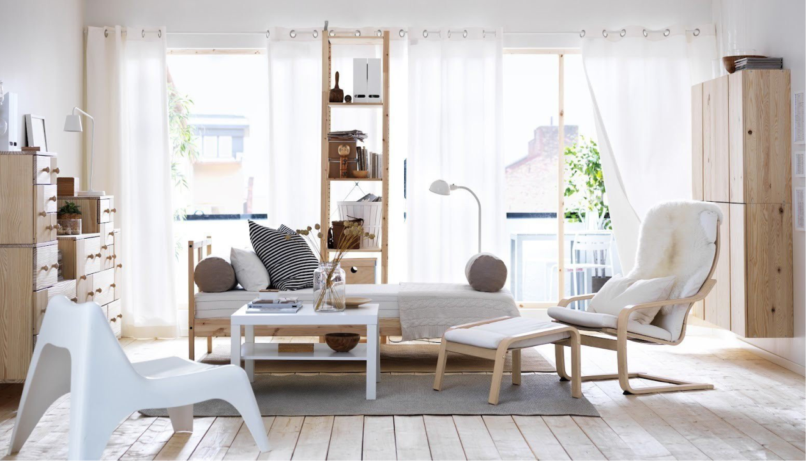

Лайфхаки по уходу за мебелью.
Ваши мебельные предметы — это важная часть вашего дома. Они
создают атмосферу комфорта и уюта. Чтобы сохранить их
в хорошем состоянии на долгие годы, следует применять
некоторые лайфхаки, которые помогут уберечь мебель
от повреждений и сохранить ее красивый внешний вид. Ниже
мы собрали несколько советов, которые помогут вам ухаживать
за мебелью:

Регулярно чистите мебель от пыли и грязи
Пыль и грязь могут нанести непоправимый вред мебели, если их
не убирать регулярно. Для чистки мебели можно использовать
мягкую ткань или щетку. Никогда не используйте грубые
материалы, такие как абразивные губки, чтобы избежать повреждения
поверхности.
Избегайте прямого солнечного света
Прямой солнечный свет может привести к выцветанию мебели и
изменению ее цвета. Постарайтесь располагать мебель в таком
месте, где она не будет подвергаться воздействию прмых
солнечных лучей.
Используйте защиту для мебели
Защитные чехлы могут защитить мебель от повреждений
и царапин. Это особенно полезно для мебели, которая
находится на открытом воздухе или часто используется.
Избегайте перегрузки мебели
Перегрузка мебели может привести к деформации и повреждению.
Следите за весом предметов, который вы помещаете
на мебель, и не перегружайте ее.
Регулярно обрабатывайте мебель
Обработка мебели специальными средствами может помочь сохранить ее
в хорошем состоянии. Это может быть воск, масло
или специальное средство для ухода за конкретным
материалом мебели. Регулярная обработка мебели поможет сохранить
ее в отличном состоянии на долгие годы.